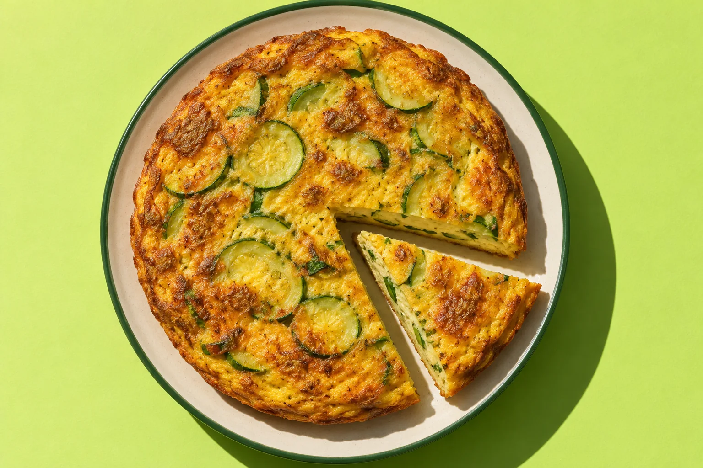
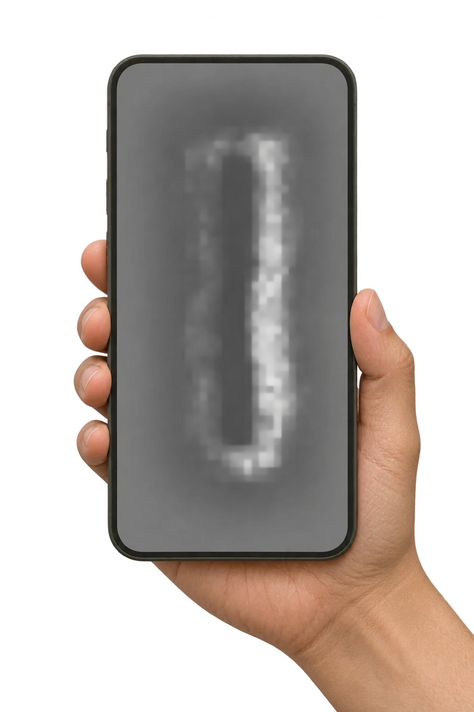

La cena è
già in frigo
Due zucchine, tre uova e la solita domanda: cosa preparo? CIBY ti aiuta a scegliere partendo da quello che hai già.
Vai alla demo
-
Usa prima ciò che scade
Vedi quali ingredienti meritano la priorità.
-
Decidi cosa cucinare
Scegli tra le ricette che puoi fare con quello che hai.
-
Sposta il pasto se serve
Tieni la ricetta e le porzioni per un altro giorno.
Una cena
da organizzare
Sono quasi le sette e hai due zucchine da usare. Decidi cosa preparare e scopri come cambia il piano se all’ultimo mangi fuori.
- 1
- 2
- 3

Attiva JavaScript per provare la demo oppure apri i prototipi nella sezione Progetto HCI.
Roadmap del progetto HCI
Come siamo arrivati dalla ricerca sulla gestione dei pasti ai primi prototipi di CIBY.
-
C1Ricerca sui bisogni
Interviste e sondaggio per capire come le persone scelgono cosa mangiare e tengono traccia degli alimenti disponibili.
-
C2Personas e scenari
Il diario e gli scenari ci hanno aiutato a mettere a fuoco un bisogno: ripensare l’uso degli ingredienti quando cambiano i programmi.
-
C3Storyboard e prototipi
Tre task, due modalità di interazione. Abbiamo scelto il touch come direzione principale e confrontato la stessa esperienza con un dialogo vocale simulato.